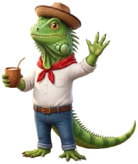

Bienvenidos a este espacio dedicado a la cultura de Tabasco. Explora y descubre saberes y expresiones que forman parte de nuestra riqueza cultural.

Pon a prueba todo lo que has aprendido sobre los instrumentos de Tabasco con nuestros minijuegos interactivos. ¡Diviértete aprendiendo!